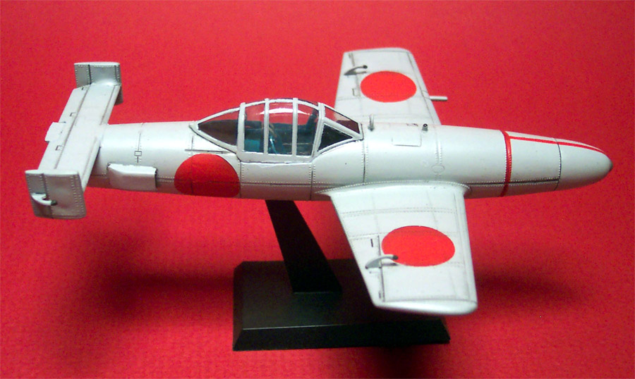
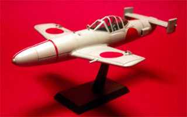
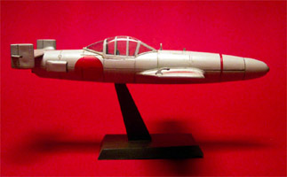
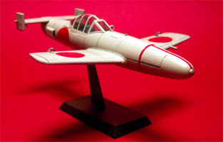
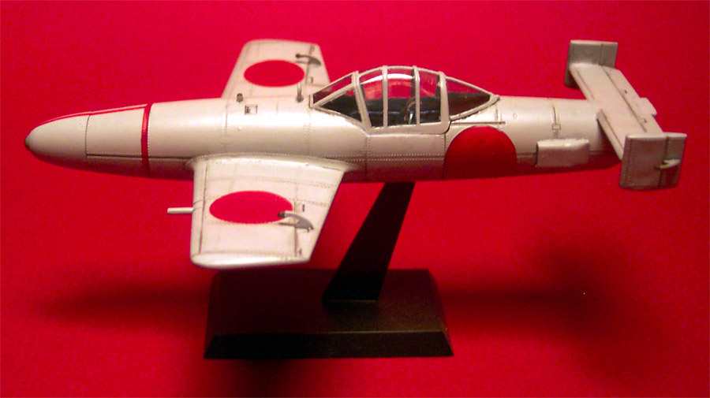
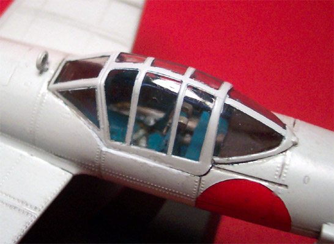
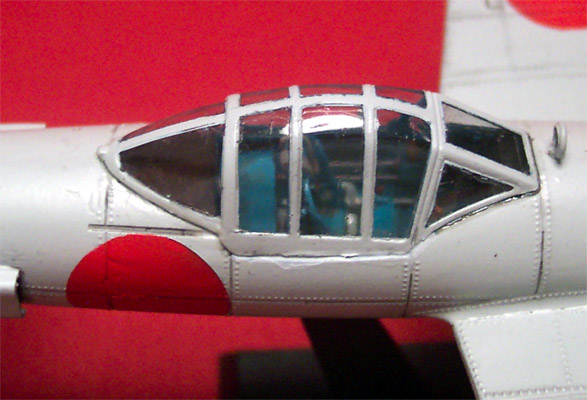
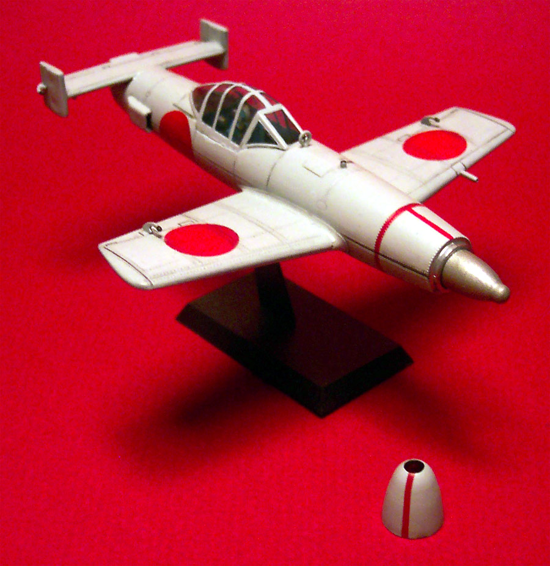

|

Ohka 'Baka' Construction/Conversion of the Italeri 1/48 kit

Kit #812 Collector's Market Value $49.99
Images, model and text copyright © 2002 By Matt Swan
Developmental Background
The Ohka or Cherry Blossom 'Baka' or 'Fool' as the Americans called it) is an example of desperation and its impact on leading edge technology. The Ohka bomb is essentially a flying, manned torpedo, a suicide bomb. The IJN developed several versions of this craft, experimenting with different rocket engines and deployment systems. One was even developed as a two-seat trainer with weights to simulate a warhead and a landing skid similar to a Komet. Pilots for these Kamikaze weapons were almost always volunteers and had little training. The craft was dropped from a carrier plane around 6100 meters and reached speeds of 660 KPH with three small rocket engines. Controls and instrumentation were, of course, rudimentary. Reports from the Navy indicate that the effects were devastating when one was successful in finding its target.
The Kit:
I started with Italeri's kit #812 Ohka and V-1. This is a fairly simple kit with some interesting interior details, especially on the V-1. There are several inaccuracies that need to be corrected. The cockpit is totally lacking in detail, there are no decals included with the kit but the canopy is very clear and the parts do fit together well. The instructions consist of a simple single fold exploded view of both kits with basic color codes that, pretty much, need to be ignored.
Construction/Conversion:

Research is the first thing that needs to be accomplished and this was done primarily with the Internet. I found several sites that featured many different interior and exterior shots of the Ohka bomb and historical information. The most useful was Tim Horton's Garber MXY7 Type 22
I settled on the type 22 as my modeling project. The cockpit back plate, part 13, was totally wrong so I cut it down prior to installation. There were gaps between the engine mounting b plates and the fuselage that I filled with styrene sheet and squadron white putty. The inner wall of the cockpit were sanded smooth and then I cut thin strips from styrene stock and glued them to the walls with Tenax 7R to create the structural members. Using a piece of styrene sheet, I fashioned a dashboard and drilled holes for instruments with a welding tip drill. Another piece of styrene sheet was cut to match the first with no holes drilled in it. I sandwiched the two together and marker the instrument positions on the back sheet with a scribe. The front piece with the holes was painted Burnt Iron. I used Reheat instrument faces on the back sheet and sandwiched everything back together when dry.  Testers clear topcoat was dropped into each instrument hole to form the glass lenses. The seat was a resin leftover taken from my spares box. It was from a Curtis Ascended kit. Any unpadded seat would do. Lightning holes were added to conform to the original seat. More styrene sheet was cut and used to make a mounting plate for the seat. Another piece was cut and drilled out before being glued to the floor of the cockpit. Sidewall details were made with various pieces of fuse wire and the joystick came from the spares box.
In replacing the kit seat the mounting tab on the stand needs to be sanded down just a little. Tape the fuselage together and dry fit the stand to make sure that it will slide into place.
To paint the interior I mixed Boyd Pacific Blue with Testers Blue #1110 until I had a suitable match for the Japanese interior blue. After the interior was painted I detailed the seat-belts with aircraft gray and aluminum belt buckles and installed it along with the joystick and rudder pedals.  The rudder pedals are simply a few pieces of fuse with superglued together. At this point the dash was installed. Take note that the fuselage halves have not been glued together yet but are taped together to allow for correct placement of the interior parts.
Next the engines were glued together, sanded and painted. I used Testers Aluminum for the front halves and Gunze Sangyo Burnt Iron for the back halves. When I dry fit these I discovered that the knob on the end of the engine was not long enough to protrude into the cockpit like they should. To correct this I cut small pieces of styrene rod and glued them on the ends of the rockets. After they had dried I added Squadron White putty. More dry time and then this was sanded to restore the cone shape. While this stuff was drying down I glued the wings together, constructed the tail planes and installed the warhead. The pitot tube was drilled out with the welding tip drill and a set of brass cross hairs from the spares box was added to the target sight. As you can see, it is most important to keep a healthy spares box going.
The interior of the nose cone and the interior area where the rockets will be installed is painted with Model Master Silver Chrome and the rockets are glued in place. Now the fuselage halves can be glued together. The seam needs some trimming with a Xacto and some light sanding. The kit does not include the air inlets for the rocket compartment so I used some extra oil coolers from a FW-189. These are resin parts and I hollowed out the inlets to give depth. They could have been formed from some heavy styrene strip just as easily. Putty was needed to get the fit right and some gentle knife work to clean it up.

The wings, tail plane and counter balances are all installed. There are a few spots inside the cockpit that need to be touched up with some putty around the rocket mounting plate. The canopy is masked with a combination of black electrical tape and regular masking tape. After the interior is touched up the canopy can be placed with a good bead of clear parts cement. As I mentioned earlier, the kit does not include any decals or stencils. After a complete search of the spare decal bag I could not find any adequate markings. I was going to have to paint them on. I have never done this before and am a little worried. I went to the local art supply store and bought a roll of Frisket film and tried to cut a circle using a dime as a form. Not a chance! After several failed experiments and a lot of frustration I hit on the perfect solution. I found that the inner hole on a compact disc is just the right size for the National marking. I laid the Frisket film on an inverted dinner plate, held the CD firmly on top of it and was able to cut six perfect circles with a new Xacto blade. The dinner plate is the secret - it prevents the tip of the blade from hanging up and allows for a smooth cut.


Now I air brushed the areas on the wings and fuselage where the marking would be with Testers flat red. The canopy was airbrushed with the interior color mixture. To make the overall exterior color I added a little Testers flat gray to some Testers flat white to create a very light gray. The Frisket stencils are placed on the model after the undercoat is totally dry and are burnished down with a toothpick. When the topcoat is put on you have to be sure to be at right angles to the surface or you'll blow paint under the Frisket stencil.
After the Frisket film is removed the nose cone is taken off and the warhead is painted Model Master Steel. Do not remove the mask from the canopy yet. It will come off after the final dull topcoat is applied.
The entire kit gets sprayed with Testers Gloss Topcoat and allowed to dry overnight. An acrylic wash is mixed with Vandyke Brown, a touch of Lamp Black and a couple drops of dish soap. This is brushed into the recessed lines and allowed to just become dry. Once it appears dry, take a cheap paper towel of stiff construction, fold it into a small pad and dampen slightly. Wipe the recessed lines from front to back to remove excess wash. The dish soap breaks down the bonding aspect of the paint. If you let it dry too long it will soak through the topcoat and become difficult. This will highlight the recessed lines and add a little bit of a weathered look. Once this has been given an opportunity to dry I coated the entire kit again with Polly Scale Clear Flat and then removed the canopy mask.

You don't want to go nuts with weathering on this because it's kind of a 'use once and forget about' type of weapon. Overall this has been a very interesting kit but the mentality of those who would use it escapes me.
Supplies:
Italeri kit #812
Strip Styrene .4X3.2mm
Strip Styrene 1.5X6.3mm
Strip Styrene 1.6mm rod
Reheat Models Instruments and Bezels
Boyd Pacific Blue enamel
Gunze Sangyo Burnt Iron H76
Tenax 7R
Testers Flat White #1168
Testers Flat Gray #1163
Testers Flay Red #1150
Testers Blue #1110
Testers Flat Black #1149
Testers Flat Aluminum #1181
Testers Gold #1144
Testers Flat Brown #1166
Testers Clear Parts Cement
Testers Sand Paper
Model Master Clear Topcoat #2736
Model Master Steel #1780
Model Master Silver Chrome #2734
Model Master Aircraft Gray #FS 16473
A&B Cyanoacrylate +
A&B CA Accelerator
Grumbacher Lamp Black watercolor
Cotman Vandyke Brown #676
Squadron White Putty
Polly Scale Flat Finish F404106
Xacto knife and blades
Tooth Picks
Fuse wire – various sizes
Black Electrical Tape
Masking Tape
Kekittrich Transparent Film (Frisket Film)
|